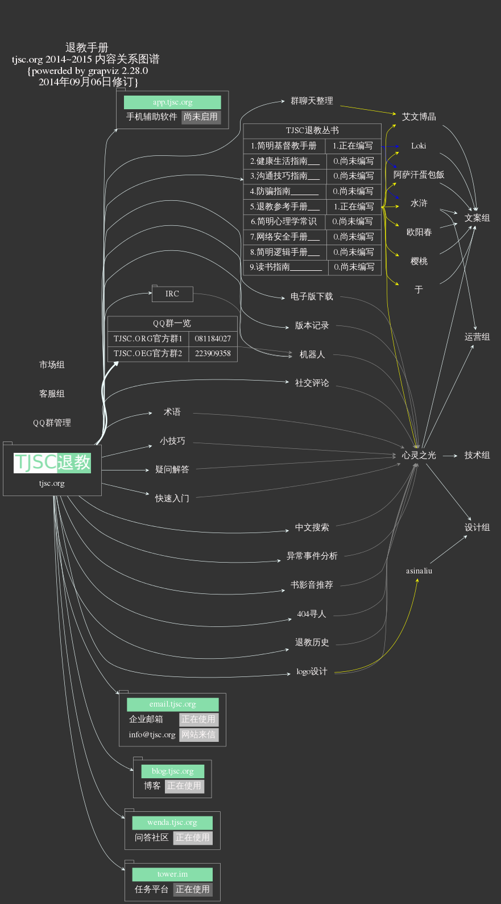

退教手册¶
退教手册的主要作用是帮助东方闪电（全能神教）的受害者家属自我救助而编辑的，本手册主要针对东方闪电问题。
- 通俗性
- 易用性
- 专业性
- 可操作性
“tjsc” 命名由来¶
“tjsc” 是由汉语拼音 “退教手册” 单词拼音”Tui Jiao Shou Ce” 的第一个字母组成。
退教手册计划¶
反馈/联系作者¶
您对手册有任何问题都可以通过邮件的方式和我联系 info@tjsc.org
- 快速入门
- 退教参考手册(tjsc)
- 简明基督教手册
- 电子版下载
- 退教历史
- 异常事件回顾
- 2012年
- 2013年
- 2014年
- 3月份
- 【事件】”联盟”释放假信息造假2014年04月02日发现，发帖时间3月28日
- 5月份
- 6月份
- 7月份
- 8月份
- 【事件】莫名网民发一分钱来进行试探 2014年08月06日
- 【事件】百度搜索收录问题 一方面是以前的网站内容，似乎在百度无法检索到，另一方面最近刚上传的内容，却被baibu当作4月16日的内容收录，这背后是什么问题？blog.angelife.org是最近刚刚启用的。(8月19日)
- 【事件】angelife.diandian.com 网站内容不存在了(08月26日)
- 【事件】360网站安全检查(08月26日)
- 【事件】联盟和同盟多QQ群被封
- 【事件】12年被封的新浪微博帐号突然发现可以访问了 http://weibo.com/angelifet
- 【事件】wiki编辑 全能神教会 词条(08月30日)
- 【事件】同盟假备案(08月30日)
- 小技巧（Tips）
- 疑问解答 (FAQ)
- 群聊天整理
- 术语
- 书、影、音推荐
- 404
- 版本记录